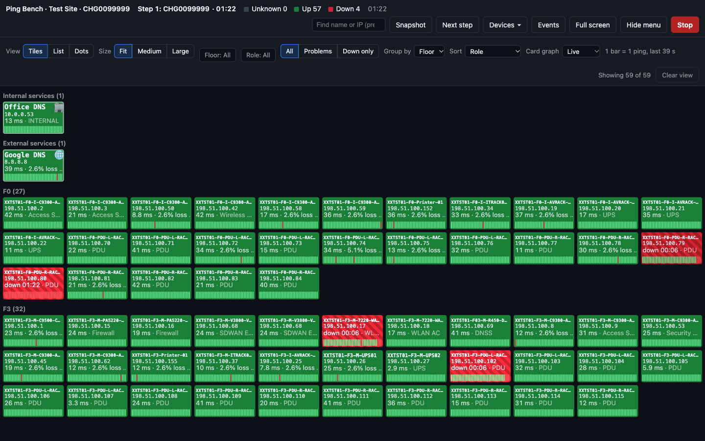
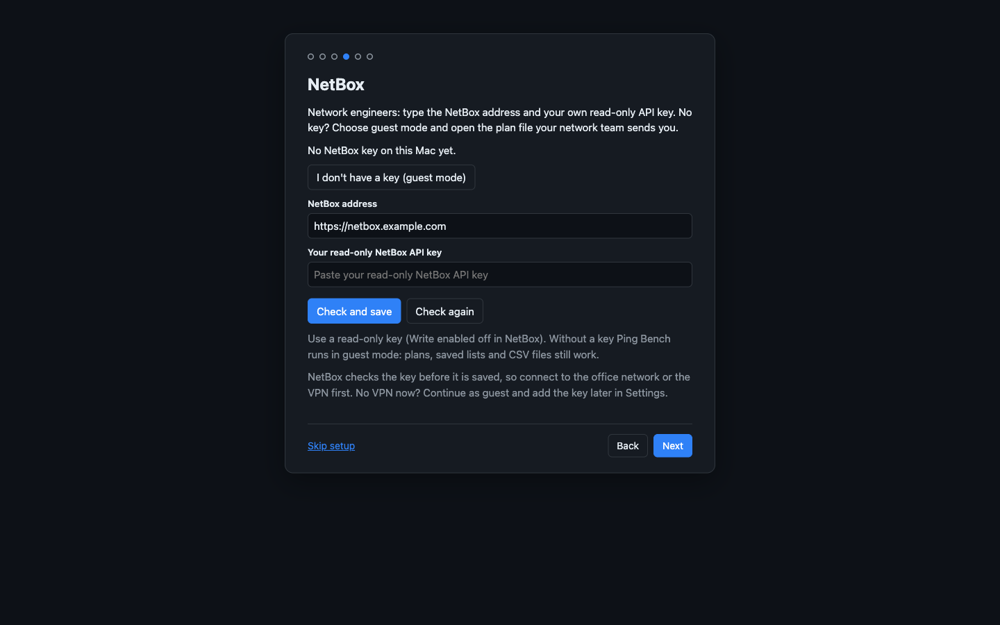
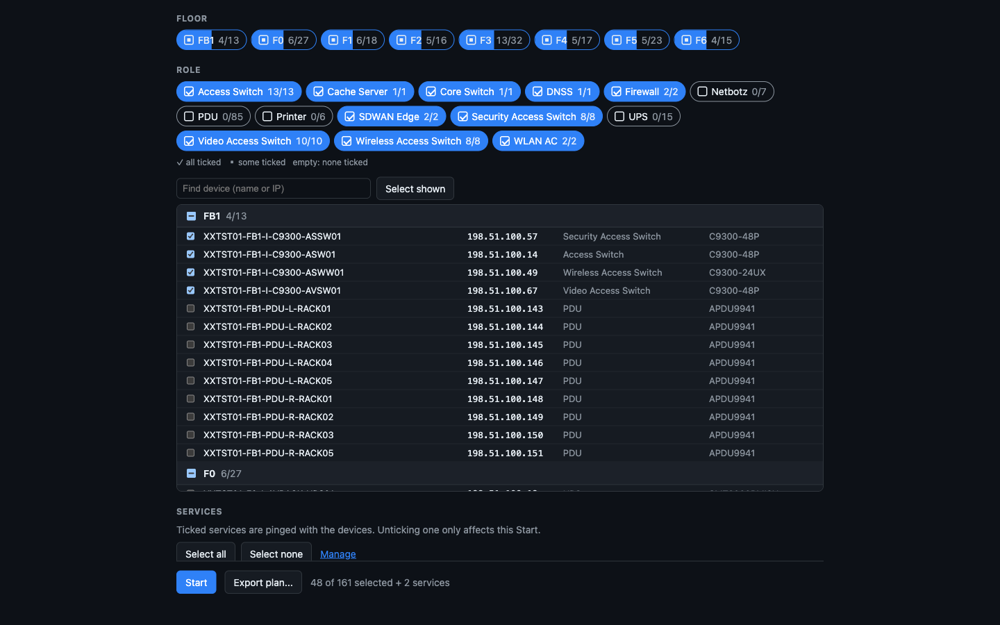
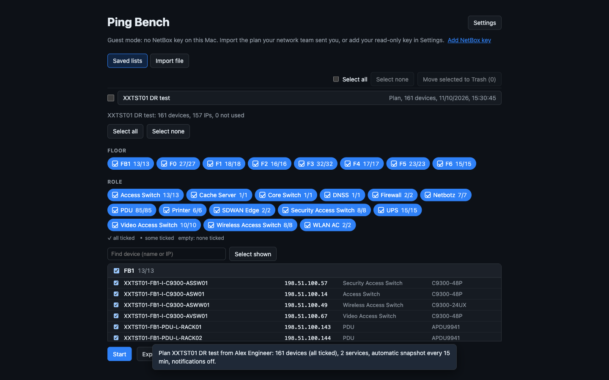

Ping Bench
A live ping wall for network maintenance and DR tests.
Every device of a site on one screen: green when it answers, red when it does not, and every outage recorded with its times for your report.
macOS 15 or later, Apple Silicon. Notarized by Apple, signed by the author. Released 16 October 2026.

Install
- Open the download. Double-click
PingBench-0.5.5.dmg. A window opens with Ping Bench and your Applications folder. - Put Ping Bench in Applications. Drag Ping Bench onto Applications. Or double-click Ping Bench in that window: the setup then offers Move to Applications, which copies it for you (into the Applications folder in your home folder when you may not write to the main one). No administrator rights or password needed. Afterwards you can eject the disk image and delete the download.
- Open it. Start Ping Bench from Applications. macOS may ask once whether to open an app downloaded from the internet: choose Open. The first-run setup starts.
- Allow the local network. Ping Bench pings devices on your office network, and macOS asks once whether it may. Click Allow in the setup, then Allow in the macOS window. If macOS blocks it, no device is pinged: the tiles turn purple and say blocked. Turn it on in System Settings > Privacy & Security > Local Network (the setup's Open System Settings goes straight there).
The first-run setup
A short setup walks you through what Ping Bench needs. Every step shows what is already set, Next saves that step at once, Back never changes anything, and Skip setup goes straight to the start screen. Settings > Run setup again opens it any time.
- Welcome, with the version.
- Put Ping Bench in Applications, only when it still runs from the disk image or your Downloads folder.
- Allow the local network, as above.
- Your name, shown on snapshots and reports, so everyone knows who ran the test.
- NetBox: network engineers type the NetBox address and their own read-only key (see For network engineers). Everyone else chooses I don't have a key (guest mode).
- Services: extra addresses to ping next to the site's devices, such as Google DNS (8.8.8.8) and Cloudflare (1.1.1.1), each marked Internal or External. Skipped in guest mode: the services come with the plan.
- Updates: whether Ping Bench looks for new versions by itself (see Updates).
- You are ready: Get site devices for an engineer, Import plan... in guest mode.
For network engineers
You have NetBox access, run maintenance windows and prepare DR tests.
Connect your NetBox key
Ping Bench ships with no NetBox access and no NetBox address: each engineer uses their own. In NetBox, create an API key with Write enabled off, so it can only read. Then, in the setup's NetBox step or in Settings > NetBox access, type the NetBox address (for example https://netbox.example.com) and Your read-only NetBox API key, and press Check and save.
NetBox checks both before anything is saved, so connect to the office network or the VPN first. The key goes into your macOS Keychain and the address into Ping Bench's settings. Forget my key removes the key and switches to guest mode.

Pick a site and the devices to watch
- On the NetBox site tab, type the exact site code, for example
XXTST01, and press Get site devices or Enter. Sites are never listed or browsed: a wrong or partial code shows "No site with code ...". The list is saved under Saved lists, so the same site opens later even when NetBox is down. No NetBox at hand? Import file > Import CSV... takes a NetBox device export as it is. - Tick the devices to ping. They are listed by floor with their name, IP, role and type, and what is ticked is exactly what gets pinged ("N of M selected"). Select all, Select none, the Floor and Role chips (untick every PDU in one click), and the Find device box with Select shown make it quick.
- Check the Services. Internal services are the company's own, such as NetBox or a DNS server; External ones are on the internet, such as Google DNS. Untick any you do not want this time; Manage opens Settings to add, rename or delete them.
- Type the Change / DR reference if you have one, for example
CHG0012345, and press Start.

Read the wall
Ping Bench pings every device live, once a second: each tile shows the device's status right now, green when it answers, red when it does not, purple when macOS blocked the ping and grey when there is no data yet. A tile holds the device's NetBox name, its IP, the ping time (or how long it has been down) and its Card graph, a heartbeat bar of its latest pings. The Internal services and External services come first: when External services go red and the site's devices stay green, the problem is the internet link, not the site.
The view bar changes only what the wall shows; every ticked device keeps being pinged and recorded.
- View: Tiles, List or Dots (V). Dots fits 500 devices on one screen. Tiles at Medium or Large size, and List, can Auto-scroll on a TV.
- Floor and Role filters, and All, Problems or Down only. Group by floor, role or none (G); Problems first (P) puts every down device at the top. Clear view shows everything again.
- Card graph: Live (one bar per ping), 2 min, 10 min, 30 min, 1 h, 4 h, Session or Off. Hover over a bar to see its time, the pings sent and the replies.
- Click a tile for its details: a response-time graph, outages and events, Open in NetBox, and a Snapshot or Export CSV of that one device.
- Events (E) lists every DOWN, UP, snapshot and step with its time.
- Hide menu (H) hides the toolbar and the view bar for more room, keeping Snapshot at hand; Show menu brings them back. Full screen (Ctrl+Cmd+F) suits a wall display.
Test steps and snapshots
When one test is done, for example a firewall failover, press Next step (N), name the next test and press Start step. Ping Bench first saves a snapshot of the finished step (untick the box to skip it), then the graphs and the outage counts start again from now. Monitoring never stops, and the report has one section per step.
Snapshot (Shift+Cmd+S) saves a picture of the wall as you see it, with every down device listed under the tiles, and copies it to the clipboard, ready to paste into the ticket or the chat. A snapshot is the wall's real status at that moment. Snapshots are also taken at Start, at Stop and at the end of each step, and every 15, 30 or 60 minutes when you turn on Automatic snapshot in Settings > Snapshots.
They are saved in your Downloads folder (or the folder chosen in Settings > Snapshots), in one folder per site named after its code and office, for example XXTST01 - Test Site, as Ping Bench <date>_<time>_<site code>.png. Every run of the same site lands in the same folder, and a copy stays with the session.
Change the wall while monitoring
The Devices menu on the wall:
- Add devices: more devices from the site's list. They start pinging at once and join their floor.
- Add service: an address that is not in the device list, such as
intranet.example.comor8.8.8.8, as Internal or External. - Remove devices: click the tiles or rows to remove, press Remove N and confirm. They leave the wall at once; the report still lists them. A removed service also leaves this Mac's saved services.
- Export plan...: this wall as a plan file for an operator (see below).
Keys on the wall
| Key | What it does |
|---|---|
| / | Find devices by name or IP |
| Esc | Clear the find box, or close the device details |
| V | Tiles, List or Dots |
| G | Group by Floor, Role or None |
| P | Problems first, or back to sorting by role |
| E | Show or hide the events |
| N | Next test step |
| H | Hide or show the menu |
| Shift+Cmd+S | Snapshot of the wall |
| Ctrl+Cmd+F | Full screen |
Stop and export the report
Press Stop when the test is over (closing the window while monitoring asks first). Ping Bench goes back to the start screen, where Past sessions lists your sessions, newest first. Press Export report next to the session and choose where to save it. The report is a folder with:
report.html: the whole report as one page that opens in any browser, with the outages, the services and every snapshot. It loads nothing from the internet.summary.txt: one section per test step with its outages and the devices still down at its end, then the whole session.events.csvand the snapshots.
The Events panel on the wall has Export report too, for a report while the test is still running.
Prepare a DR plan for a BPO
A plan is a .pingbench file that carries a DR test to an operator who has no NetBox access, for example a BPO doing remote hands. They open it, check it and press Start; you get the evidence back.
- Load the site, tick the devices and services for the test, and type the change reference.
- Press Export plan... next to Start and save the file. On a running wall, Devices > Export plan... saves what is on the wall now.
- Send the file to the operator, with the test steps you want them to follow: the name of each step and when to press Next step.
A plan holds
- every device of the loaded list, so the operator can add one while monitoring;
- which devices are ticked;
- the ticked services, Internal and External;
- the change reference;
- the automatic snapshot interval and the notification choices;
- your wall view, if you changed it for that site.
A plan never holds
- your NetBox key;
- the NetBox address.
It does hold internal IP addresses and device names: share it like any other internal document.
Services given as host names need DNS where the operator is (often the VPN); IP addresses need no DNS. An older Ping Bench may refuse a plan made with a newer one, so make sure the operator's Ping Bench is as new as yours.
For BPO operators
You do the remote hands for a DR test, with a plan file from the network engineer and no NetBox access.
Ping Bench runs in guest mode on your Mac: everything the test needs comes with the plan. Keep this list at hand on the day.
- Install Ping Bench in Applications (see Install) and allow the local network when macOS asks. Do this before you open the plan.
- Choose guest mode. At the NetBox step of the setup, choose I don't have a key (guest mode).
- Open the plan. Double-click the
.pingbenchfile in Finder, or press Import file > Import plan... in Ping Bench. If it asks Replace your services?, choose Replace, so you ping exactly the services the engineer planned. A plan without services asks Remove your services? instead: Remove does the same, and Keep mine keeps your own list in either question. - Check what the plan brought. Ping Bench says it in a message, for example "Plan <name> from <engineer>: 120 devices (98 ticked), 2 services, automatic snapshot every 15 min, notifications on." Check it against what the engineer told you, with the "N of M selected" count and the change reference.
- Press Start when the engineer asks you to. If the update question appears before the test, Later is fine: Ping Bench never asks while monitoring.
- Follow the engineer's steps. When one test ends and the next begins, press Next step (N), type the step's name and press Start step.
- Take snapshots whenever you are asked: Snapshot (Shift+Cmd+S) copies a picture of the wall to the clipboard, ready to paste into the chat or the ticket, and saves it in your Downloads folder, in the site's folder. If macOS asks once to let Ping Bench use Downloads, choose Allow.
- Press Stop when the engineer says the test is over.
- Send the report back. On the start screen, under Past sessions, press Export report next to the newest session and choose where to save it. Send the engineer that whole report folder (in Finder, Compress turns it into one zip file).

Everything stays editable after the plan is open: tick or untick devices if the engineer asks. Red tiles are devices that stopped answering; purple tiles mean macOS is blocking the pings (see the FAQ).
Updates
From version 0.5.2, Ping Bench keeps itself up to date from this page.
- It looks for a new version a few seconds after Ping Bench opens and about every 6 hours while it is open (with no internet it tries again every 10 minutes until it gets through), and whenever you choose Ping Bench > Check for Updates... or Help > Check for Updates... in the menu bar. Ping Bench > About Ping Bench shows the version and the update status, with Check for Updates and Download page buttons. Checking, downloading an update and opening this page need internet access, not the office network or the VPN; the About window itself opens offline.
- It always asks before installing, and never while you are monitoring: the question waits until you stop.
- When you say yes, it downloads the new version, checks its checksum, Apple's notarization and the author's signature, then replaces itself and restarts. Nothing is installed unless every check passes.
- Settings > Updates turns the automatic check off.
- If Ping Bench cannot replace itself (an Applications folder only IT can change, or it is running from the disk image or Downloads), the question offers Open download page and says why. Install the new version from this page as under Install.
Using 0.5.1 or older? Those versions cannot update themselves. Quit Ping Bench, download 0.5.2 or newer from this page once and drag it onto Applications, replacing the old copy, or double-click Ping Bench in the disk image and press Move to Applications, which replaces an older copy of Ping Bench that is not running, in your Applications folder. Your settings, saved lists, sessions and key stay as they are. Later versions then arrive in the app.
FAQ and troubleshooting
A tile is purple and says blocked. Is the device down?
No: it was never pinged. Purple means macOS is blocking Ping Bench from the local network, and a purple banner on the wall says so. Turn on Ping Bench in System Settings > Privacy & Security > Local Network; devices that then answer turn green, logged as UP with "Local Network allowed; answering". A red tile is DOWN: it is pinged live and is not answering.
Every device went red at once.
Look for the amber banner: it means this Mac lost its own network (Wi-Fi or VPN), so the devices shown DOWN may be fine. Those events are marked as a local network issue in the report. Check this Mac's connection first.
Check and save does not work.
NetBox checks the address and the key before Ping Bench saves them, so this Mac must reach NetBox: connect to the office network or the VPN first, and make sure the key is a read-only key of your own. No VPN right now? Continue in guest mode and add the key later in Settings > NetBox access.
What is guest mode?
Ping Bench without a NetBox key, for operators such as a BPO doing remote hands. The NetBox site tab is hidden and the status line says guest mode; plans, saved lists and CSV files work as usual. Add NetBox key on the status line opens Settings if you get a key later.
A plan says it was made with a newer Ping Bench.
Your Ping Bench is older than the engineer's. Update it (Ping Bench > Check for Updates... from 0.5.4, Help > Check for Updates... from 0.5.2, or download it from this page), then open the plan again.
How do I get notifications?
In Settings > Notifications, all off at first: Notify when a device goes down or pinging stops, Play a sound and Also when this Mac loses its network. Test notification shows one now; the first time, macOS asks whether to allow them. If Settings says macOS notifications are off for Ping Bench, turn them on in System Settings > Notifications. A plan can turn them on for you.
Where does Ping Bench keep my data?
On your Mac only. ~/Library/Application Support/Ping Bench/ holds your settings, saved lists and one folder per session with its event log and snapshots. Snapshots are also saved in Downloads (or the folder chosen in Settings > Snapshots), one folder per site. Your NetBox key is in the macOS Keychain. Old sessions can be moved to the Trash from Past sessions on the start screen.
How do I uninstall Ping Bench?
To remove your key, press Forget my key in Settings > NetBox access first. Then quit Ping Bench and drag it from Applications (or the Applications folder in your home folder) to the Trash. To remove your data too, delete ~/Library/Application Support/Ping Bench (in Finder, Go > Go to Folder...). Snapshots in Downloads stay until you delete them.
Security and privacy
- No telemetry, analytics or tracking. Ping Bench talks to your NetBox, pings the devices and services you choose and, from 0.5.2, asks this site whether a new version is out and downloads it from GitHub. This page sets no cookies and loads no scripts, web fonts or trackers.
- Your NetBox key stays in your macOS Keychain. It is never written to Ping Bench's data folder and never put in a plan.
- Plans and reports hold internal IP addresses and device names. Share them like any other internal document.
- Every release is notarized by Apple and signed with the author's Developer ID (Team ID
6L3JTJA4Y6). Before it installs an update, Ping Bench checks both, and the download's checksum.
To check the installed app yourself, run these in Terminal. The first shows TeamIdentifier=6L3JTJA4Y6, the second source=Notarized Developer ID.
codesign -dv "/Applications/Ping Bench.app"
spctl -a -vv "/Applications/Ping Bench.app"Downloads
Ping Bench 0.5.5, released 16 October 2026, for macOS 15 or later on Apple Silicon.
PingBench-0.5.5.dmg
Disk image, 7.7 MB. The one to download: open it and drag Ping Bench to Applications.
SHA-256 c8f4d27aa4c4357a78bbda2544d6ea266b0e1b04ebe593aea4609d08a45c74db
PingBench-0.5.5.zip
Zip, 5.8 MB. The same signed and notarized app; the in-app updater uses this file.
SHA-256 86fd67594c29a05678b198a8ef98ca14b6a06041926d36c9d7e8915697b8163f
Older versions and every file: all releases on GitHub.
Check a download
In Terminal, run shasum -a 256 on the file and compare the result with the SHA-256 above. They must match exactly.
shasum -a 256 ~/Downloads/PingBench-0.5.5.dmgRelease notes
0.5.5
- The site code field's example is now a neutral code (XXTST01).
0.5.4
- A Ping Bench menu with About Ping Bench: the version, the author, the update status, and buttons Check for Updates and Download page. Check for Updates is also in that menu.
- Ping Bench now checks for a new version when it opens, and again every 10 minutes while there is no internet. Settings > Updates still turns the automatic check off.
0.5.3
- Maintenance release: no changes to how Ping Bench works.
0.5.2
- Ping Bench updates itself from its download page: when a new version is out, it asks first, then installs it and restarts.
- Every update is checked before it is installed: its checksum, Apple's notarization and the author's signature.
- Never while monitoring: the question waits until you stop.
- Ping Bench checks about every 6 hours while it is open. Settings > Updates turns the automatic check off; Help > Check for Updates... checks now.
- A download page with step-by-step guides for network engineers and for BPO operators doing remote hands.
- The timeline under the wall is gone, with its T key; snapshots no longer draw it.
- Coming from 0.5.1 or older: install 0.5.2 once from the download page. Later versions arrive in the app.
0.5.1
- Each network engineer types the NetBox address and their own read-only NetBox key. Ping Bench no longer ships with either.
- Guest mode, for operators without a key: plans, saved lists and CSV files work as usual.
- DR plan files (
.pingbench): Export plan... saves the devices, services, reference and settings; the operator double-clicks the plan or uses Import plan... - The plan's name, author and date are written in the evidence: the log,
summary.txtandreport.html. - A Devices menu on the wall: Add devices, Add service, Remove devices and Export plan...
- Removed devices leave the wall at once; the report still lists them.
- Hide menu (H) hides the toolbar and the view bar for more room, and keeps Snapshot at hand.
- Snapshots are also copied to one folder per site in Downloads (or the folder chosen in Settings > Snapshots).
0.4.0
- Pinging restarts by itself after a failure, a warning when events cannot be recorded,
report.html, CSV export per device, notifications and automatic snapshots.
0.3.4
- Tiles, List and Dots views, longer Card graph windows, and loss figures that match the bars.
0.3.3
- Live Card graph (1 bar = 1 ping) and smaller tile text.
0.3.2
- A snapshot folder, heartbeat bars fixed to the clock, green and red tiles, and a splash screen.
0.3.1
- Internal and External services, and stricter heartbeat bars.
0.3.0
- Installer and setup wizard, adding devices while monitoring, and host names as targets.
0.2.0
- External targets, clearer picker chips, and clearing past sessions.
0.1.0
- The first live ping wall from NetBox, for DR tests and maintenance evidence.